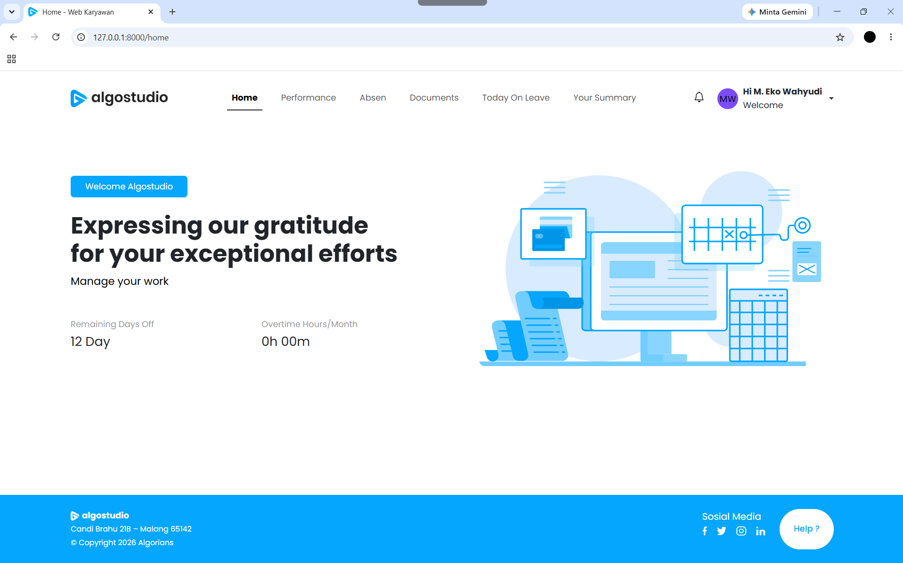

Operasional, Administrasi, Pergudangan & Dukungan IT
Pribadi yang adaptif dan terstruktur dengan pengalaman nyata dalam koordinasi distribusi lapangan, administrasi perkantoran, manajemen arus pergudangan (inbound/outbound), serta keahlian teknis pengembangan aplikasi web.
Dedikasi kerja, ketelitian, dan kompetensi integratif.
Lulusan S1 Ilmu Komputer dengan pengalaman beragam di bidang operasional, administrasi, pergudangan, dan pengolahan data. Terbiasa melakukan pengecekan barang fisik secara teliti, pencatatan data terstruktur,
penyusunan laporan periodik, serta mengoptimalkan penggunaan komputer dan sistem web untuk meningkatkan efisiensi alur kerja. Mampu bekerja sama dalam tim lintas fungsi, patuh pada SOP, dan cepat menguasai hal baru sesuai
kebutuhan dinamis perusahaan.
Ketelitian & Data
Input data cermat, pengarsipan berkas rapi, dan pembuatan laporan harian hingga bulanan berbasis spreadsheet dan sistem terpadu.
Keandalan Lapangan
Pengalaman memantau alur logistik, sortir inbound/outbound resi gudang, dan koordinasi distribusi lintas unit.
Kecakapan IT & Web
Kemampuan troubleshooting hardware komputer, pengelolaan lab, serta perancangan aplikasi web fungsional dengan Laravel & MySQL.
Keahlian Utama
Kombinasi kompetensi teknis, operasional, dan manajerial.
Operasional & Distribusi
Koordinasi lapangan terpadu, pemantauan kebutuhan logistik harian, dan monitoring distribusi tepat waktu.
Pembuatan aset visual informatif dan materi publikasi digital secara efektif menggunakan aplikasi multimedia.
CanvaCapCutDesain Grafis Media Sosial
Pengalaman Kerja
Rekam jejak profesional di berbagai industri dan peran.
Feb 2026 – Sekarang
Asisten Lapangan
SPPG Purutrejo 2 · Kota Pasuruan
Bertanggung jawab memantau proses produksi dan distribusi makanan bergizi, memastikan ketersediaan bahan baku sesuai standar, menghitung kesesuaian jumlah porsi, serta berkoordinasi intensif dengan pihak sekolah, kader
posyandu, dan menyusun laporan operasional harian.
Des 2025 – Jan 2026
Staff Admin
PT Rajawali Assa Mandiri
Mengelola rekonsiliasi laporan bulanan, menangani administrasi surat-menyurat harian, penginputan data inventaris dan keuangan kantor, serta pengelolaan publikasi informasi perusahaan.
Agu 2025 – Nov 2025
Sortir
SPX (Shopee Express)
Menyortir paket inbound dan outbound, memastikan ketepatan nomor resi dengan kota tujuan pengiriman, meminimalisir kesalahan sortir, serta menjaga kerapian dan keamanan tata letak gudang sortir.
Sep 2024 – Des 2024
Magang Web Developer
Algostudio, Malang
Berkontribusi langsung dalam pengembangan dan penambahan fitur pada website Management SDM internal perusahaan, melakukan pengetesan fungsional aplikasi (quality testing), serta menganalisis dan memperbaiki bug kode.
2024 – 2025
Asisten Laboratorium Komputer
Universitas PGRI Wiranegara
Melakukan pengecekan rutin hardware dan software pada puluhan unit PC laboratorium, troubleshooting masalah koneksi internet dan sistem operasi, serta membimbing mahasiswa dalam sesi praktikum pemrograman.
Okt 2018 – Mar 2019
Magang Staff Administrasi
Badan Keuangan Daerah Kabupaten Pasuruan
Mendukung tugas administrasi instansi pemerintahan, mengorganisir dokumen keuangan daerah, penginputan arsip data digital, dan pengagendaan surat masuk/keluar.
Pendidikan & Prestasi
Kualifikasi akademik formal dan pencapaian kompetitif.
Riwayat Pendidikan
S1 Ilmu Komputer
Universitas PGRI Wiranegara · 2021 – 2025
IPK 3,70 (Sangat Memuaskan)
Fokus studi pada Rekayasa Perangkat Lunak, Manajemen Basis Data, dan Sistem Informasi.
Teknik Komputer dan Jaringan
SMKN 1 Pasuruan · 2017 – 2020
Nilai Akhir 82,21
Mempelajari instalasi jaringan LAN/WAN, administrasi server, dan perakitan PC.
Pencapaian & Organisasi
Program P2MW 2024
Kementerian Pendidikan, Kebudayaan, Riset, dan Teknologi
Penerima Pendanaan Usaha
Lolos pendanaan usaha kreatif mahasiswa “VektoRizz” dalam kategori Industri Kreatif, Seni, dan Budaya melalui inovasi produk cinderamata visual digital.
Festival Seni Al-Banjari
Tingkat Regional Jawa Timur
Juara 1 Tingkat Provinsi
Meraih peringkat pertama dalam festival musik religi tradisi, mencerminkan kemampuan kerja sama tim, ritme, dan disiplin tinggi.
Proyek Pilihan
Aplikasi web nyata yang telah dirancang, dikembangkan, dan diuji fungsionalitasnya.
Aplikasi Web Manajemen Akademik
Sistem Informasi E-Skripsi
Platform berbasis web terintegrasi yang memudahkan mahasiswa dalam pengajuan proposal skripsi, penentuan pembimbing secara terstruktur, peninjauan berkas secara digital, serta dashboard pemantauan progres bagi staf akademik.
Laravel
PHP
Filament Admin
MySQL
HTML5 / CSS3
JavaScript
Klik gambar pratinjau untuk memperbesar detail tangkapan layar.
Halaman Login Sistem E-Skripsi
Perbesar
Aplikasi Web Manajemen SDM & Kehadiran
Aplikasi Absensi & Kinerja
Sistem pencatatan kehadiran presensi karyawan internal yang dikembangkan selama masa magang di Algostudio. Dilengkapi modul rekapitulasi data karyawan, pencatatan jam kerja otomatis, serta instrumen evaluasi performa kerja
berkala.
Laravel
PHP
MySQL
HTML5 / CSS3
JavaScript
Bootstrap UI
Klik gambar pratinjau untuk memperbesar detail tangkapan layar.

Dashboard Karyawan & Pencatatan Presensi
Perbesar
Mari Terhubung
Saya menyambut peluang kerja, kolaborasi operasional, maupun diskusi teknis.